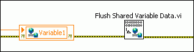

LabVIEW temporarily stores the data that you write to a shared variable in an 8 kilobyte buffer. LabVIEW sends that data over the network when the buffer is full or 10 milliseconds have passed. Because you incur overhead each time you send a data packet over the network, this design increases throughput by decreasing the number of data packets you send.
However, this design increases latency when you write less than 8 kilobytes of data to a shared variable. To eliminate the 10 millisecond delay and minimize latency, send all shared variable data over the network immediately by using the Flush Shared Variable Data VI after you write to the shared variable, as shown in the following figure.

The previous figure flushes the data that a Shared Variable node writes, but you also can flush shared variable data that you write with other methods. For example, if you are writing shared variables programmatically, use the Flush Shared Variable Data VI after the Write Variable function.
|
Note��When you use the Flush Shared Variable Data VI, LabVIEW sends all of the shared variable data that has not yet transmitted over the network, including data that you write with all of the shared variables in other applications and other parts of the same application. Therefore, the Flush Shared Variable Data VI is useful when you need to minimize latency for all of the shared variable writers on a single computer. However, if some of those shared variables require high throughput rates, the Flush Shared Variable Data VI could affect those shared variables adversely. |